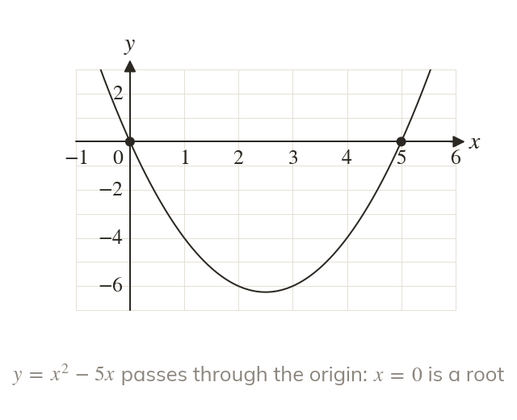
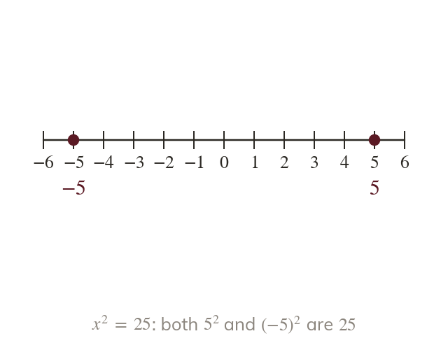
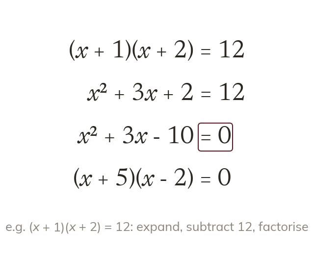
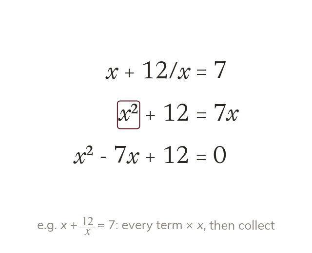

No constant term means a factor of x
With no constant term, is a common factor. So is always one solution.
When a quadratic has no constant term, is a common factor of every term. Taking it out means is always one of the solutions.
Some quadratics are missing a term, and some arrive tangled in brackets or fractions. Each one is a single step away from a form already solved.
Work down the page at your own pace. Write every answer in your book first, then click to check it.
Read each card, then follow the worked examples one step at a time.

With no constant term, is a common factor. So is always one solution.

With no term, is made to stand alone. Both its square roots are solutions.
Pick an answer. If it's wrong, the feedback tells you which mistake it was.
Read each card, then follow the worked examples one step at a time.

Brackets are expanded and every term collected on one side. Only then is it factorised.

Multiplying every term by x clears it from a denominator. What results is a quadratic.
Pick an answer. If it's wrong, the feedback tells you which mistake it was.
Finished? Next lesson: 10H.9.5 The Quadratic Formula.
Log in, then search for a code to practise that skill.
Videos, worksheets and more on each part of this lesson.